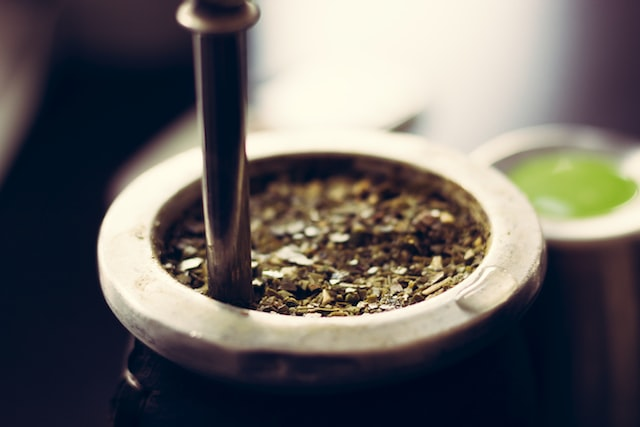
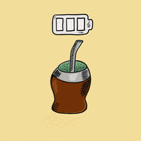

El mate es una infusión hecha con hojas de yerba mate (Ilex paraguariensis), planta originaria de las cuencas de los ríos Paraguay y Paraná, en Sudamérica.2 Estas plantas previamente secadas, cortadas y molidas forman la yerba mate, la cual tiene sabor amargo debido a los taninos de sus hojas. Por esto, hay quienes gustan de endulzar un poco el mate con azúcar, stevia o endulzante no calórico, pero comúnmente se toma amargo. La espuma que se genera al «cebar» se debe a los glucósidos que la yerba mate contiene. Es consumido en América desde la época prehispánica por algunas etnias de origen tupí-guaraní, como los avá, los mbyá y los kaiowa, y también, en menor medida, por otras etnias que realizaban comercio con ellos, como los ñandevá, los taluhets (pampas antiguos) y los qom (tobas).
Fue adoptado rápidamente por los colonizadores españoles y quedó como parte del acervo cultural principalmente en Argentina, Paraguay, Uruguay, sur y oriente de Bolivia, sur de Brasil y Chile, especialmente en el centro y sur del país (entre Santiago y Magallanes). A su vez, es consumido normalmente en Siria (el mayor importador de yerba mate en el mundo) y Líbano.34
Como sucede con el té, el café o el chocolate, posee un efecto estimulante debido a la cafeína que contiene.56 Anteriormente, y en forma popular, se pensaba que tenía un energizante similar pero no igual, al que se llamaba «mateína».56
Además se le suma un efecto diurético, que es compensado por el alto consumo de agua que se realiza cuando se «matea», resultando así una infusión digestiva, depuradora y ―al poseer antioxidantes― preservadora del organismo. Como las otras infusiones mencionadas, el mate tiene cierta acidez, razón por la que muchas veces se le añaden ―en escasas proporciones― otras hierbas (digestivas, reguladoras de la función hepática, sedantes, etc.) que logran neutralizar la acidez[cita requerida] como también compensar el ligero efecto estimulante de la cafeína.7[cita requerida]
Tradicionalmente, se bebe caliente mediante un sorbete denominado bombilla colocado en un pequeño recipiente, que es denominado ―según la zona― «mate», «cuia», «porongo» o «guampa», que contiene la infusión.8
